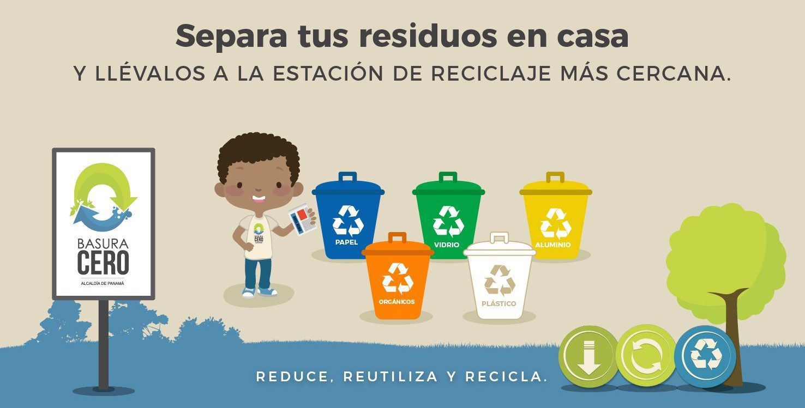
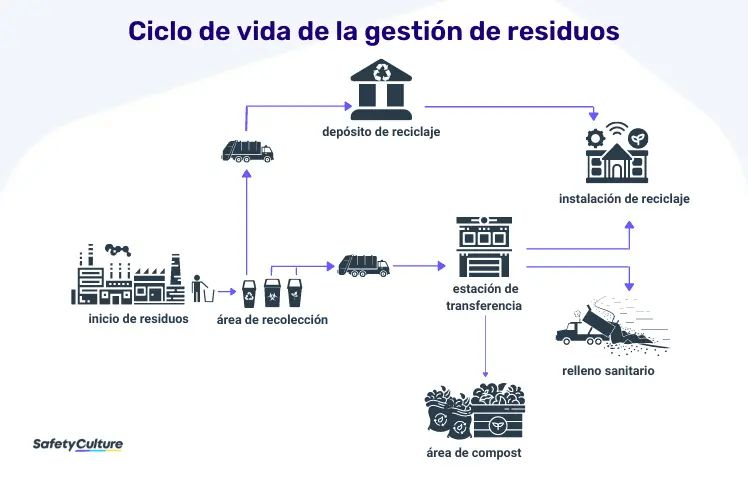
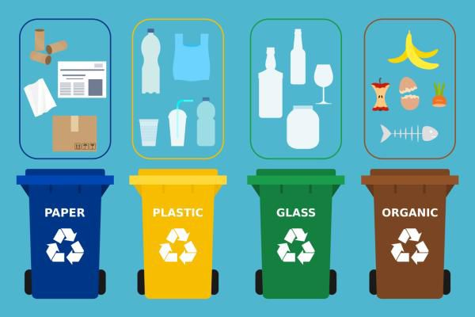

¿Qué es un sistema de gestión de residuos?
Un sistema de gestión de residuos es la estrategia que utiliza una organización para eliminar, reducir, reutilizar y prevenir los residuos. Los posibles métodos de eliminación de residuos son el reciclaje, el compostaje, la incineración, los vertederos, la biorremediación, la conversión de residuos en energía y la minimización de residuos.


